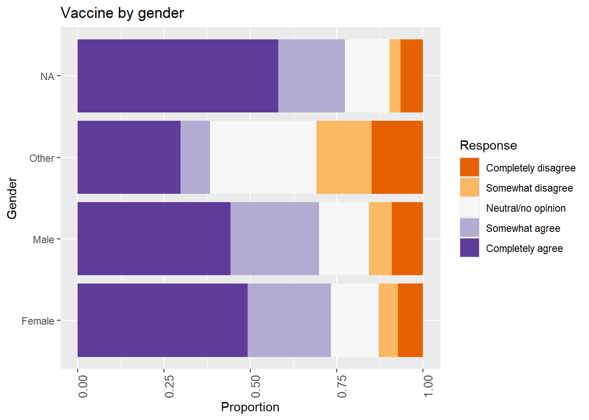
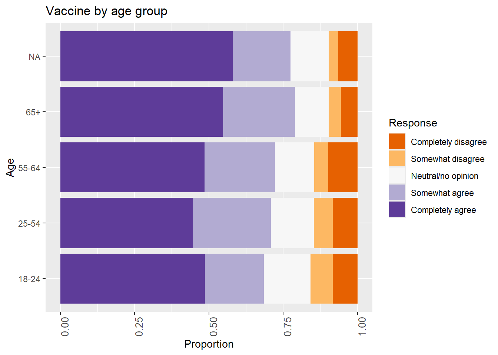
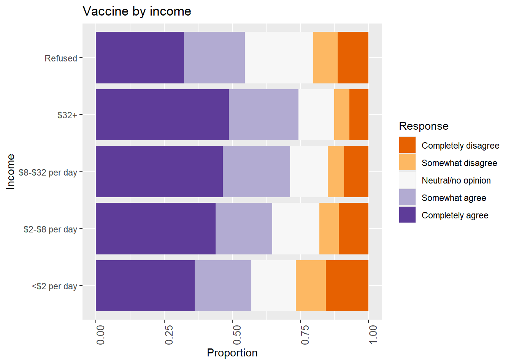
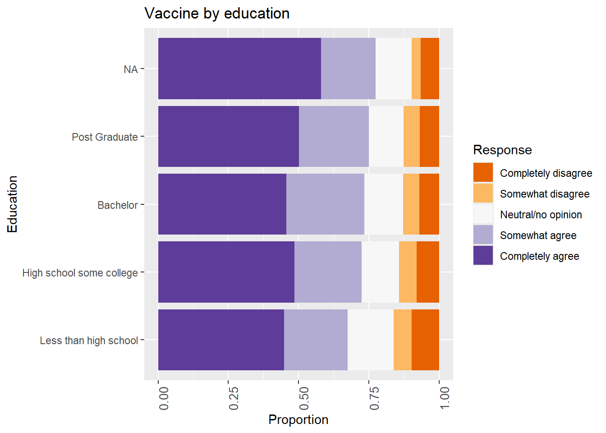
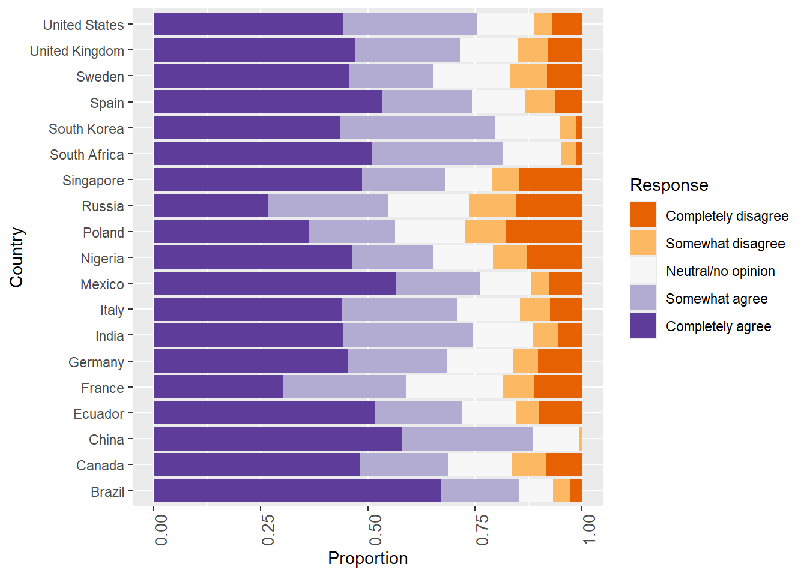
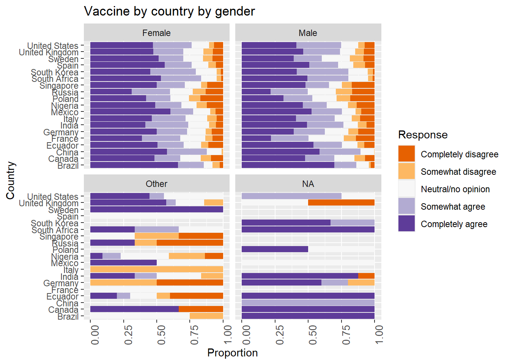
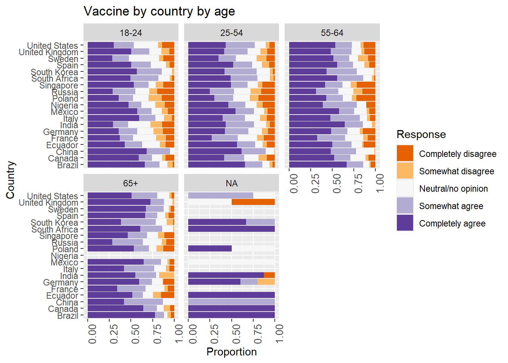
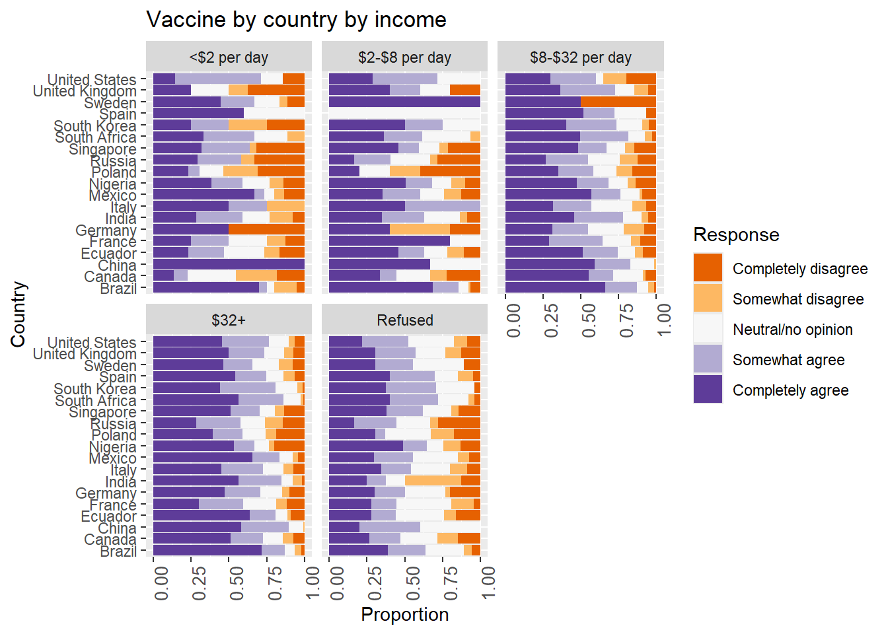

8 Reproducibility Study on COVID-19 Vaccine Survey Paper (R code paper).
Hier wordt de reproducibility van deze paper beoordeeld. paper: A global survey of potential acceptance of a COVID-19 vaccine Link naar het artikel
8.1 Doel van de code
De gegeven code is bedoeld om een dataset te analyseren die verband houdt met een COVID-19-vaccinonderzoek. Het cleans en bewerkt de data, genereer visualisaties om de verdeling van de antwoorden weer te geven op basis van geslacht, leeftijd, inkomen, opleiding en land. Voer logistische regressie uit om factoren te analyseren die van invloed zijn op de waarschijnlijkheid dat de aanbeveling van de werkgever om zich te laten vaccineren wordt opgevolgd en op de waarschijnlijkheid dat een bewezen veilig en effectief vaccin wordt gebruikt. Samenvattende tabellen maken voor beschrijvende statistieken.
8.2 Code beoordeling
De leesbaarheid van de code kan als volgt worden beoordeeld:
Naamgeving en opmerkingen van variabelen: 4 (de meeste variabelen hebben een goede naam, hoewel een variabelnaam in de data was anders dan in de code) Structuur en organisatie: 4 (de code is logisch gestructureerd, maar sommige delen kunnen worden gemodulariseerd voor meer duidelijkheid) Gebruik van bibliotheken en functies: 4 (de juiste libraries worden effectief gebruikt, er moest ook extra libraries toegevoegd worden).
Overall readability: 4 (Good)
8.3 Errors and Fixes
Het originele script geen grote fouten bevatte, maar wel enkele aanpassingen voor path en de variabel naam in het originele code “casesperm” aanpassen naar “covidcases” dus kleine aanpassingen vereiste.
8.4 Effort to Reproduce Visualization
Effort required: 2 (Easy) Het proces van het reproduceren van de visualisatie was relatief eenvoudig. Er waren kleine aanpassingen aan de bestandspaden en coderingsinstellingen nodig, maar over het algemeen verliep de code soepel.
8.4.1 code toepassing
8.4.1.2 Visualizations
Gender vs. Business Response
#Question:I would follow my employer’s recommendation to get a COVID-19 vaccine once the government has approved it as safe and effective.
## Completely disagree Somewhat disagree Neutral/no opinion Somewhat agree
## 1179 2299 3488 4579
## Completely agree
## 1881


8.4.1.3 Country vs. Vaccine Response
Question:If a COVID-19 vaccine is proven safe and effective and is available to me, I will take it.
## Completely disagree Somewhat disagree Neutral/no opinion Somewhat agree
## 1091 819 1912 3318
## Completely agree
## 6286
8.4.1.4 Logistic Regression Analysis
##
## Call:
## glm(formula = biz_reg ~ educ_fact, family = binomial(link = "logit"),
## data = data)
##
## Coefficients:
## Estimate Std. Error z value Pr(>|z|)
## (Intercept) -0.24137 0.03255 -7.415 1.22e-13 ***
## educ_factHigh school some college 0.22944 0.04373 5.247 1.55e-07 ***
## educ_factBachelor 0.21647 0.04629 4.676 2.92e-06 ***
## educ_factPost Graduate 0.27021 0.06673 4.049 5.14e-05 ***
## ---
## Signif. codes: 0 '***' 0.001 '**' 0.01 '*' 0.05 '.' 0.1 ' ' 1
##
## (Dispersion parameter for binomial family taken to be 1)
##
## Null deviance: 18549 on 13394 degrees of freedom
## Residual deviance: 18513 on 13391 degrees of freedom
## (31 observations deleted due to missingness)
## AIC: 18521
##
## Number of Fisher Scoring iterations: 3## 2.5 % 97.5 %
## (Intercept) 0.7855478 0.7369295 0.8372369
## educ_factHigh school some college 1.2578937 1.1546207 1.3705237
## educ_factBachelor 1.2416827 1.1340265 1.3596568
## educ_factPost Graduate 1.3102448 1.1496353 1.4934216##
## Call:
## glm(formula = biz_reg ~ ww_fct, family = binomial(link = "logit"),
## data = data)
##
## Coefficients:
## Estimate Std. Error z value Pr(>|z|)
## (Intercept) -0.31121 0.09574 -3.250 0.00115 **
## ww_fct$2-$8 per day -0.09922 0.11888 -0.835 0.40395
## ww_fct$8-$32 per day 0.03515 0.10257 0.343 0.73187
## ww_fct$32+ 0.38609 0.09818 3.933 8.4e-05 ***
## ww_fctRefused -0.24903 0.12660 -1.967 0.04918 *
## ---
## Signif. codes: 0 '***' 0.001 '**' 0.01 '*' 0.05 '.' 0.1 ' ' 1
##
## (Dispersion parameter for binomial family taken to be 1)
##
## Null deviance: 18593 on 13425 degrees of freedom
## Residual deviance: 18451 on 13421 degrees of freedom
## AIC: 18461
##
## Number of Fisher Scoring iterations: 4## 2.5 % 97.5 %
## (Intercept) 0.7325581 0.6065818 0.8830920
## ww_fct$2-$8 per day 0.9055477 0.7175302 1.1436626
## ww_fct$8-$32 per day 1.0357699 0.8476987 1.2675333
## ww_fct$32+ 1.4712151 1.2145868 1.7851499
## ww_fctRefused 0.7795590 0.6082024 0.9992052##
## Call:
## glm(formula = biz_reg ~ Gender_r, family = binomial(link = "logit"),
## data = data)
##
## Coefficients:
## Estimate Std. Error z value Pr(>|z|)
## (Intercept) -0.04351 0.02362 -1.842 0.0655 .
## Gender_rMale -0.06788 0.03482 -1.949 0.0513 .
## Gender_rOther -0.38862 0.21242 -1.830 0.0673 .
## ---
## Signif. codes: 0 '***' 0.001 '**' 0.01 '*' 0.05 '.' 0.1 ' ' 1
##
## (Dispersion parameter for binomial family taken to be 1)
##
## Null deviance: 18549 on 13394 degrees of freedom
## Residual deviance: 18543 on 13392 degrees of freedom
## (31 observations deleted due to missingness)
## AIC: 18549
##
## Number of Fisher Scoring iterations: 3## 2.5 % 97.5 %
## (Intercept) 0.9574236 0.9140984 1.002787
## Gender_rMale 0.9343727 0.8727181 1.000365
## Gender_rOther 0.6779892 0.4437462 1.023462##
## Call:
## glm(formula = biz_reg ~ agegroup_fct, family = binomial(link = "logit"),
## data = data)
##
## Coefficients:
## Estimate Std. Error z value Pr(>|z|)
## (Intercept) -0.22949 0.04439 -5.170 2.34e-07 ***
## agegroup_fct25-54 0.19504 0.04949 3.941 8.11e-05 ***
## agegroup_fct55-64 0.15310 0.06822 2.244 0.0248 *
## agegroup_fct65+ 0.12029 0.06835 1.760 0.0784 .
## ---
## Signif. codes: 0 '***' 0.001 '**' 0.01 '*' 0.05 '.' 0.1 ' ' 1
##
## (Dispersion parameter for binomial family taken to be 1)
##
## Null deviance: 18549 on 13394 degrees of freedom
## Residual deviance: 18533 on 13391 degrees of freedom
## (31 observations deleted due to missingness)
## AIC: 18541
##
## Number of Fisher Scoring iterations: 3## 2.5 % 97.5 %
## (Intercept) 0.7949389 0.7285878 0.8670821
## agegroup_fct25-54 1.2153557 1.1031284 1.3393090
## agegroup_fct55-64 1.1654375 1.0195955 1.3322025
## agegroup_fct65+ 1.1278247 0.9864098 1.2895293##
## Call:
## glm(formula = biz_reg ~ sick_reg, family = binomial(link = "logit"),
## data = data)
##
## Coefficients:
## Estimate Std. Error z value Pr(>|z|)
## (Intercept) -0.07712 0.01861 -4.145 3.4e-05 ***
## sick_reg 0.01237 0.05006 0.247 0.805
## ---
## Signif. codes: 0 '***' 0.001 '**' 0.01 '*' 0.05 '.' 0.1 ' ' 1
##
## (Dispersion parameter for binomial family taken to be 1)
##
## Null deviance: 18593 on 13425 degrees of freedom
## Residual deviance: 18593 on 13424 degrees of freedom
## AIC: 18597
##
## Number of Fisher Scoring iterations: 3## 2.5 % 97.5 %
## (Intercept) 0.925778 0.8926175 0.960154
## sick_reg 1.012450 0.9177857 1.116795##
## Call:
## glm(formula = biz_reg ~ covidcases, family = binomial(link = "logit"),
## data = data)
##
## Coefficients:
## Estimate Std. Error z value Pr(>|z|)
## (Intercept) -6.447e-02 2.024e-02 -3.186 0.00144 **
## covidcases -3.536e-08 3.412e-08 -1.036 0.29998
## ---
## Signif. codes: 0 '***' 0.001 '**' 0.01 '*' 0.05 '.' 0.1 ' ' 1
##
## (Dispersion parameter for binomial family taken to be 1)
##
## Null deviance: 18593 on 13425 degrees of freedom
## Residual deviance: 18592 on 13424 degrees of freedom
## AIC: 18596
##
## Number of Fisher Scoring iterations: 3## 2.5 % 97.5 %
## (Intercept) 0.9375602 0.9010938 0.9754905
## covidcases 1.0000000 0.9999999 1.0000000##
## Call:
## glm(formula = biz_reg ~ mortalityperm, family = binomial(link = "logit"),
## data = data)
##
## Coefficients:
## Estimate Std. Error z value Pr(>|z|)
## (Intercept) 9.383e-02 2.489e-02 3.771 0.000163 ***
## mortalityperm -7.526e-04 7.986e-05 -9.424 < 2e-16 ***
## ---
## Signif. codes: 0 '***' 0.001 '**' 0.01 '*' 0.05 '.' 0.1 ' ' 1
##
## (Dispersion parameter for binomial family taken to be 1)
##
## Null deviance: 18593 on 13425 degrees of freedom
## Residual deviance: 18504 on 13424 degrees of freedom
## AIC: 18508
##
## Number of Fisher Scoring iterations: 3## 2.5 % 97.5 %
## (Intercept) 1.0983768 1.0461005 1.153293
## mortalityperm 0.9992477 0.9990912 0.999404##
## Call:
## glm(formula = biz_reg ~ trusthealth, family = binomial(link = "logit"),
## data = data)
##
## Coefficients:
## Estimate Std. Error z value Pr(>|z|)
## (Intercept) -1.11093 0.03560 -31.21 <2e-16 ***
## trusthealth 1.46964 0.04143 35.47 <2e-16 ***
## ---
## Signif. codes: 0 '***' 0.001 '**' 0.01 '*' 0.05 '.' 0.1 ' ' 1
##
## (Dispersion parameter for binomial family taken to be 1)
##
## Null deviance: 18593 on 13425 degrees of freedom
## Residual deviance: 17192 on 13424 degrees of freedom
## AIC: 17196
##
## Number of Fisher Scoring iterations: 4## 2.5 % 97.5 %
## (Intercept) 0.329253 0.306936 0.352903
## trusthealth 4.347664 4.009819 4.716956#regression
##
## Call:
## glm(formula = vacc2_reg ~ educ_fact, family = binomial(link = "logit"),
## data = data)
##
## Coefficients:
## Estimate Std. Error z value Pr(>|z|)
## (Intercept) 0.72940 0.03449 21.148 < 2e-16 ***
## educ_factHigh school some college 0.23498 0.04750 4.947 7.53e-07 ***
## educ_factBachelor 0.28923 0.05078 5.696 1.23e-08 ***
## educ_factPost Graduate 0.37261 0.07564 4.926 8.38e-07 ***
## ---
## Signif. codes: 0 '***' 0.001 '**' 0.01 '*' 0.05 '.' 0.1 ' ' 1
##
## (Dispersion parameter for binomial family taken to be 1)
##
## Null deviance: 16005 on 13394 degrees of freedom
## Residual deviance: 15959 on 13391 degrees of freedom
## (31 observations deleted due to missingness)
## AIC: 15967
##
## Number of Fisher Scoring iterations: 4## 2.5 % 97.5 %
## (Intercept) 2.073836 1.938783 2.219479
## educ_factHigh school some college 1.264886 1.152443 1.388312
## educ_factBachelor 1.335394 1.209004 1.475298
## educ_factPost Graduate 1.451515 1.252847 1.685387##
## Call:
## glm(formula = vacc2_reg ~ ww_fct, family = binomial(link = "logit"),
## data = data)
##
## Coefficients:
## Estimate Std. Error z value Pr(>|z|)
## (Intercept) 0.28377 0.09555 2.970 0.00298 **
## ww_fct$2-$8 per day 0.31961 0.11974 2.669 0.00761 **
## ww_fct$8-$32 per day 0.62649 0.10370 6.042 1.53e-09 ***
## ww_fct$32+ 0.77846 0.09872 7.885 3.14e-15 ***
## ww_fctRefused -0.09912 0.12463 -0.795 0.42645
## ---
## Signif. codes: 0 '***' 0.001 '**' 0.01 '*' 0.05 '.' 0.1 ' ' 1
##
## (Dispersion parameter for binomial family taken to be 1)
##
## Null deviance: 16039 on 13425 degrees of freedom
## Residual deviance: 15864 on 13421 degrees of freedom
## AIC: 15874
##
## Number of Fisher Scoring iterations: 4## 2.5 % 97.5 %
## (Intercept) 1.3281250 1.102059 1.603210
## ww_fct$2-$8 per day 1.3765894 1.088341 1.740585
## ww_fct$8-$32 per day 1.8710240 1.525768 2.291495
## ww_fct$32+ 2.1781143 1.793335 2.641425
## ww_fctRefused 0.9056355 0.709063 1.155941##
## Call:
## glm(formula = vacc2_reg ~ Gender_r, family = binomial(link = "logit"),
## data = data)
##
## Coefficients:
## Estimate Std. Error z value Pr(>|z|)
## (Intercept) 1.01412 0.02672 37.957 < 2e-16 ***
## Gender_rMale -0.17404 0.03858 -4.511 6.45e-06 ***
## Gender_rOther -1.49105 0.21385 -6.972 3.12e-12 ***
## ---
## Signif. codes: 0 '***' 0.001 '**' 0.01 '*' 0.05 '.' 0.1 ' ' 1
##
## (Dispersion parameter for binomial family taken to be 1)
##
## Null deviance: 16005 on 13394 degrees of freedom
## Residual deviance: 15940 on 13392 degrees of freedom
## (31 observations deleted due to missingness)
## AIC: 15946
##
## Number of Fisher Scoring iterations: 4## 2.5 % 97.5 %
## (Intercept) 2.7569408 2.6168378 2.9057887
## Gender_rMale 0.8402641 0.7790644 0.9062713
## Gender_rOther 0.2251371 0.1468455 0.3405870##
## Call:
## glm(formula = vacc2_reg ~ agegroup_fct, family = binomial(link = "logit"),
## data = data)
##
## Coefficients:
## Estimate Std. Error z value Pr(>|z|)
## (Intercept) 0.77449 0.04745 16.324 < 2e-16 ***
## agegroup_fct25-54 0.11185 0.05320 2.103 0.0355 *
## agegroup_fct55-64 0.18343 0.07479 2.453 0.0142 *
## agegroup_fct65+ 0.54982 0.07943 6.922 4.44e-12 ***
## ---
## Signif. codes: 0 '***' 0.001 '**' 0.01 '*' 0.05 '.' 0.1 ' ' 1
##
## (Dispersion parameter for binomial family taken to be 1)
##
## Null deviance: 16005 on 13394 degrees of freedom
## Residual deviance: 15950 on 13391 degrees of freedom
## (31 observations deleted due to missingness)
## AIC: 15958
##
## Number of Fisher Scoring iterations: 4## 2.5 % 97.5 %
## (Intercept) 2.169492 1.977863 2.382223
## agegroup_fct25-54 1.118340 1.007203 1.240767
## agegroup_fct55-64 1.201332 1.037878 1.391520
## agegroup_fct65+ 1.732948 1.484222 2.026518##
## Call:
## glm(formula = vacc2_reg ~ sick_reg, family = binomial(link = "logit"),
## data = data)
##
## Coefficients:
## Estimate Std. Error z value Pr(>|z|)
## (Intercept) 0.92490 0.02062 44.864 <2e-16 ***
## sick_reg -0.02516 0.05522 -0.456 0.649
## ---
## Signif. codes: 0 '***' 0.001 '**' 0.01 '*' 0.05 '.' 0.1 ' ' 1
##
## (Dispersion parameter for binomial family taken to be 1)
##
## Null deviance: 16039 on 13425 degrees of freedom
## Residual deviance: 16039 on 13424 degrees of freedom
## AIC: 16043
##
## Number of Fisher Scoring iterations: 4## 2.5 % 97.5 %
## (Intercept) 2.5216068 2.4220314 2.625894
## sick_reg 0.9751541 0.8756257 1.087288##
## Call:
## glm(formula = vacc2_reg ~ covidcases, family = binomial(link = "logit"),
## data = data)
##
## Coefficients:
## Estimate Std. Error z value Pr(>|z|)
## (Intercept) 8.855e-01 2.241e-02 39.516 < 2e-16 ***
## covidcases 1.185e-07 3.944e-08 3.005 0.00266 **
## ---
## Signif. codes: 0 '***' 0.001 '**' 0.01 '*' 0.05 '.' 0.1 ' ' 1
##
## (Dispersion parameter for binomial family taken to be 1)
##
## Null deviance: 16039 on 13425 degrees of freedom
## Residual deviance: 16030 on 13424 degrees of freedom
## AIC: 16034
##
## Number of Fisher Scoring iterations: 4## 2.5 % 97.5 %
## (Intercept) 2.42426 2.320307 2.533359
## covidcases 1.00000 1.000000 1.000000##
## Call:
## glm(formula = vacc2_reg ~ mortalityperm, family = binomial(link = "logit"),
## data = data)
##
## Coefficients:
## Estimate Std. Error z value Pr(>|z|)
## (Intercept) 9.539e-01 2.766e-02 34.480 <2e-16 ***
## mortalityperm -1.428e-04 8.737e-05 -1.635 0.102
## ---
## Signif. codes: 0 '***' 0.001 '**' 0.01 '*' 0.05 '.' 0.1 ' ' 1
##
## (Dispersion parameter for binomial family taken to be 1)
##
## Null deviance: 16039 on 13425 degrees of freedom
## Residual deviance: 16036 on 13424 degrees of freedom
## AIC: 16040
##
## Number of Fisher Scoring iterations: 4## 2.5 % 97.5 %
## (Intercept) 2.5957471 2.4591827 2.740873
## mortalityperm 0.9998572 0.9996862 1.000029##
## Call:
## glm(formula = vacc2_reg ~ trusthealth, family = binomial(link = "logit"),
## data = data)
##
## Coefficients:
## Estimate Std. Error z value Pr(>|z|)
## (Intercept) 0.58213 0.03204 18.17 <2e-16 ***
## trusthealth 0.51285 0.04008 12.80 <2e-16 ***
## ---
## Signif. codes: 0 '***' 0.001 '**' 0.01 '*' 0.05 '.' 0.1 ' ' 1
##
## (Dispersion parameter for binomial family taken to be 1)
##
## Null deviance: 16039 on 13425 degrees of freedom
## Residual deviance: 15877 on 13424 degrees of freedom
## AIC: 15881
##
## Number of Fisher Scoring iterations: 4## 2.5 % 97.5 %
## (Intercept) 1.789855 1.681205 1.906237
## trusthealth 1.670051 1.543807 1.806430#Table
##
## Overall
## n 13426
## Gender_r (%)
## Female 7172 (53.5)
## Male 6129 (45.8)
## Other 94 ( 0.7)
## ww_fct (%)
## <$2 per day 447 ( 3.3)
## $2-$8 per day 840 ( 6.3)
## $8-$32 per day 3011 (22.4)
## $32+ 8498 (63.3)
## Refused 630 ( 4.7)
## educ_fact (%)
## Less than high school 3830 (28.6)
## High school some college 4692 (35.0)
## Bachelor 3694 (27.6)
## Post Graduate 1179 ( 8.8)
## agegroup_fct (%)
## 18-24 2057 (15.4)
## 25-54 8360 (62.4)
## 55-64 1493 (11.1)
## 65+ 1485 (11.1)
## Business2 (%)
## 1 1179 ( 8.8)
## 2 2299 (17.1)
## 3 3488 (26.0)
## 4 4579 (34.1)
## 5 1881 (14.0)
## Vaccine (%)
## 1 1091 ( 8.1)
## 2 819 ( 6.1)
## 3 1912 (14.2)
## 4 3318 (24.7)
## 5 6286 (46.8)## Stratified by country_name
## Brazil Canada China Ecuador
## n 717 707 712 741
## Gender_r (%)
## Female 436 (60.9) 392 (55.6) 351 (49.4) 407 (55.0)
## Male 276 (38.5) 307 (43.5) 360 (50.6) 323 (43.6)
## Other 4 ( 0.6) 6 ( 0.9) 0 ( 0.0) 10 ( 1.4)
## ww_fct (%)
## <$2 per day 20 ( 2.8) 22 ( 3.1) 2 ( 0.3) 30 ( 4.0)
## $2-$8 per day 89 (12.4) 9 ( 1.3) 3 ( 0.4) 92 (12.4)
## $8-$32 per day 334 (46.6) 56 ( 7.9) 69 ( 9.7) 344 (46.4)
## $32+ 238 (33.2) 567 (80.2) 633 (88.9) 225 (30.4)
## Refused 36 ( 5.0) 53 ( 7.5) 5 ( 0.7) 50 ( 6.7)
## educ_fact (%)
## Less than high school 176 (24.6) 204 (28.9) 236 (33.2) 371 (50.1)
## High school some college 272 (38.0) 380 (53.9) 436 (61.3) 276 (37.3)
## Bachelor 232 (32.4) 97 (13.8) 33 ( 4.6) 77 (10.4)
## Post Graduate 36 ( 5.0) 24 ( 3.4) 6 ( 0.8) 16 ( 2.2)
## agegroup_fct (%)
## 18-24 171 (23.9) 102 (14.5) 85 (12.0) 224 (30.3)
## 25-54 412 (57.5) 428 (60.7) 450 (63.3) 425 (57.4)
## 55-64 57 ( 8.0) 86 (12.2) 62 ( 8.7) 58 ( 7.8)
## 65+ 76 (10.6) 89 (12.6) 114 (16.0) 33 ( 4.5)
## Business2 (%)
## 1 95 (13.2) 33 ( 4.7) 3 ( 0.4) 155 (20.9)
## 2 206 (28.7) 89 (12.6) 23 ( 3.2) 193 (26.0)
## 3 158 (22.0) 227 (32.1) 90 (12.6) 192 (25.9)
## 4 190 (26.5) 280 (39.6) 290 (40.7) 153 (20.6)
## 5 68 ( 9.5) 78 (11.0) 306 (43.0) 48 ( 6.5)
## Vaccine (%)
## 1 19 ( 2.6) 60 ( 8.5) 0 ( 0.0) 74 (10.0)
## 2 29 ( 4.0) 55 ( 7.8) 5 ( 0.7) 40 ( 5.4)
## 3 57 ( 7.9) 106 (15.0) 76 (10.7) 94 (12.7)
## 4 131 (18.3) 145 (20.5) 218 (30.6) 150 (20.2)
## 5 481 (67.1) 341 (48.2) 413 (58.0) 383 (51.7)
## Stratified by country_name
## France Germany India Italy
## n 669 722 742 736
## Gender_r (%)
## Female 333 (49.8) 417 (58.2) 485 (66.1) 412 (56.0)
## Male 334 (49.9) 298 (41.6) 243 (33.1) 323 (43.9)
## Other 2 ( 0.3) 2 ( 0.3) 6 ( 0.8) 1 ( 0.1)
## ww_fct (%)
## <$2 per day 8 ( 1.2) 2 ( 0.3) 39 ( 5.3) 4 ( 0.5)
## $2-$8 per day 5 ( 0.7) 5 ( 0.7) 172 (23.2) 2 ( 0.3)
## $8-$32 per day 48 ( 7.2) 51 ( 7.1) 360 (48.5) 44 ( 6.0)
## $32+ 561 (83.9) 634 (87.8) 163 (22.0) 651 (88.5)
## Refused 47 ( 7.0) 30 ( 4.2) 8 ( 1.1) 35 ( 4.8)
## educ_fact (%)
## Less than high school 407 (60.8) 338 (47.1) 126 (17.2) 115 (15.6)
## High school some college 134 (20.0) 133 (18.5) 429 (58.4) 378 (51.4)
## Bachelor 105 (15.7) 118 (16.5) 163 (22.2) 107 (14.5)
## Post Graduate 23 ( 3.4) 128 (17.9) 16 ( 2.2) 136 (18.5)
## agegroup_fct (%)
## 18-24 105 (15.7) 84 (11.7) 58 ( 7.9) 111 (15.1)
## 25-54 381 (57.0) 403 (56.2) 599 (81.6) 457 (62.1)
## 55-64 77 (11.5) 117 (16.3) 48 ( 6.5) 94 (12.8)
## 65+ 106 (15.8) 113 (15.8) 29 ( 4.0) 74 (10.1)
## Business2 (%)
## 1 49 ( 7.3) 32 ( 4.4) 59 ( 8.0) 46 ( 6.2)
## 2 135 (20.2) 92 (12.7) 84 (11.3) 115 (15.6)
## 3 197 (29.4) 209 (28.9) 125 (16.8) 220 (29.9)
## 4 239 (35.7) 271 (37.5) 290 (39.1) 300 (40.8)
## 5 49 ( 7.3) 118 (16.3) 184 (24.8) 55 ( 7.5)
## Vaccine (%)
## 1 74 (11.1) 74 (10.2) 42 ( 5.7) 55 ( 7.5)
## 2 49 ( 7.3) 43 ( 6.0) 42 ( 5.7) 51 ( 6.9)
## 3 152 (22.7) 111 (15.4) 105 (14.2) 109 (14.8)
## 4 192 (28.7) 167 (23.1) 224 (30.2) 198 (26.9)
## 5 202 (30.2) 327 (45.3) 329 (44.3) 323 (43.9)
## Stratified by country_name
## Mexico Nigeria Poland Russia
## n 699 670 666 680
## Gender_r (%)
## Female 364 (52.1) 373 (55.7) 302 (45.5) 346 (50.9)
## Male 332 (47.6) 275 (41.0) 362 (54.5) 328 (48.2)
## Other 2 ( 0.3) 22 ( 3.3) 0 ( 0.0) 6 ( 0.9)
## ww_fct (%)
## <$2 per day 15 ( 2.1) 195 (29.1) 13 ( 2.0) 24 ( 3.5)
## $2-$8 per day 88 (12.6) 225 (33.6) 5 ( 0.8) 42 ( 6.2)
## $8-$32 per day 306 (43.8) 175 (26.1) 316 (47.4) 340 (50.0)
## $32+ 263 (37.6) 30 ( 4.5) 286 (42.9) 256 (37.6)
## Refused 27 ( 3.9) 45 ( 6.7) 46 ( 6.9) 18 ( 2.6)
## educ_fact (%)
## Less than high school 207 (29.7) 249 (37.2) 61 ( 9.2) 67 ( 9.9)
## High school some college 413 (59.2) 325 (48.5) 295 (44.4) 157 (23.1)
## Bachelor 66 ( 9.5) 82 (12.2) 308 (46.4) 405 (59.6)
## Post Graduate 12 ( 1.7) 14 ( 2.1) 0 ( 0.0) 51 ( 7.5)
## agegroup_fct (%)
## 18-24 134 (19.2) 203 (30.3) 84 (12.7) 76 (11.2)
## 25-54 416 (59.6) 439 (65.5) 382 (57.5) 441 (64.9)
## 55-64 69 ( 9.9) 28 ( 4.2) 95 (14.3) 86 (12.6)
## 65+ 79 (11.3) 0 ( 0.0) 103 (15.5) 77 (11.3)
## Business2 (%)
## 1 85 (12.2) 86 (12.8) 78 (11.7) 94 (13.8)
## 2 146 (20.9) 130 (19.4) 134 (20.1) 184 (27.1)
## 3 157 (22.5) 158 (23.6) 161 (24.2) 218 (32.1)
## 4 233 (33.3) 200 (29.9) 215 (32.3) 147 (21.6)
## 5 78 (11.2) 96 (14.3) 78 (11.7) 37 ( 5.4)
## Vaccine (%)
## 1 54 ( 7.7) 86 (12.8) 118 (17.7) 104 (15.3)
## 2 29 ( 4.1) 53 ( 7.9) 64 ( 9.6) 75 (11.0)
## 3 83 (11.9) 94 (14.0) 109 (16.4) 128 (18.8)
## 4 138 (19.7) 127 (19.0) 134 (20.1) 192 (28.2)
## 5 395 (56.5) 310 (46.3) 241 (36.2) 181 (26.6)
## Stratified by country_name
## Singapore South Africa South Korea Spain
## n 655 619 752 748
## Gender_r (%)
## Female 310 (47.3) 294 (47.6) 392 (52.3) 401 (53.6)
## Male 342 (52.2) 321 (51.9) 357 (47.7) 345 (46.1)
## Other 3 ( 0.5) 3 ( 0.5) 0 ( 0.0) 2 ( 0.3)
## ww_fct (%)
## <$2 per day 22 ( 3.4) 9 ( 1.5) 4 ( 0.5) 5 ( 0.7)
## $2-$8 per day 37 ( 5.6) 47 ( 7.6) 4 ( 0.5) 2 ( 0.3)
## $8-$32 per day 236 (36.0) 184 (29.7) 42 ( 5.6) 29 ( 3.9)
## $32+ 339 (51.8) 329 (53.2) 678 (90.2) 692 (92.5)
## Refused 21 ( 3.2) 50 ( 8.1) 24 ( 3.2) 20 ( 2.7)
## educ_fact (%)
## Less than high school 205 (31.3) 136 (22.0) 183 (24.4) 199 (26.6)
## High school some college 219 (33.4) 85 (13.8) 145 (19.4) 129 (17.2)
## Bachelor 178 (27.2) 318 (51.5) 340 (45.4) 309 (41.3)
## Post Graduate 53 ( 8.1) 79 (12.8) 81 (10.8) 111 (14.8)
## agegroup_fct (%)
## 18-24 118 (18.0) 77 (12.5) 83 (11.1) 115 (15.4)
## 25-54 399 (60.9) 400 (64.7) 499 (66.6) 486 (65.0)
## 55-64 84 (12.8) 70 (11.3) 97 (13.0) 70 ( 9.4)
## 65+ 54 ( 8.2) 71 (11.5) 70 ( 9.3) 77 (10.3)
## Business2 (%)
## 1 40 ( 6.1) 36 ( 5.8) 20 ( 2.7) 88 (11.8)
## 2 120 (18.3) 90 (14.5) 35 ( 4.7) 173 (23.1)
## 3 153 (23.4) 211 (34.1) 161 (21.4) 178 (23.8)
## 4 245 (37.4) 208 (33.6) 362 (48.1) 234 (31.3)
## 5 97 (14.8) 74 (12.0) 174 (23.1) 75 (10.0)
## Vaccine (%)
## 1 97 (14.8) 9 ( 1.5) 11 ( 1.5) 47 ( 6.3)
## 2 40 ( 6.1) 21 ( 3.4) 27 ( 3.6) 53 ( 7.1)
## 3 73 (11.1) 84 (13.6) 114 (15.2) 92 (12.3)
## 4 126 (19.2) 189 (30.5) 273 (36.3) 156 (20.9)
## 5 319 (48.7) 316 (51.1) 327 (43.5) 400 (53.5)
## Stratified by country_name
## Sweden United Kingdom United States p
## n 650 768 773
## Gender_r (%) <0.001
## Female 326 (50.2) 408 (53.3) 423 (55.0)
## Male 322 (49.5) 344 (44.9) 337 (43.8)
## Other 2 ( 0.3) 14 ( 1.8) 9 ( 1.2)
## ww_fct (%) <0.001
## <$2 per day 18 ( 2.8) 8 ( 1.0) 7 ( 0.9)
## $2-$8 per day 1 ( 0.2) 5 ( 0.7) 7 ( 0.9)
## $8-$32 per day 2 ( 0.3) 55 ( 7.2) 20 ( 2.6)
## $32+ 593 (91.2) 644 (83.9) 716 (92.6)
## Refused 36 ( 5.5) 56 ( 7.3) 23 ( 3.0)
## educ_fact (%) <0.001
## Less than high school 325 (50.0) 167 (21.8) 58 ( 7.5)
## High school some college 146 (22.5) 197 (25.7) 143 (18.6)
## Bachelor 114 (17.5) 254 (33.2) 388 (50.5)
## Post Graduate 65 (10.0) 148 (19.3) 180 (23.4)
## agegroup_fct (%) <0.001
## 18-24 63 ( 9.7) 121 (15.8) 43 ( 5.6)
## 25-54 297 (45.7) 479 (62.5) 567 (73.7)
## 55-64 128 (19.7) 79 (10.3) 88 (11.4)
## 65+ 162 (24.9) 87 (11.4) 71 ( 9.2)
## Business2 (%) <0.001
## 1 45 ( 6.9) 67 ( 8.7) 68 ( 8.8)
## 2 121 (18.6) 104 (13.5) 125 (16.2)
## 3 257 (39.5) 234 (30.5) 182 (23.5)
## 4 162 (24.9) 271 (35.3) 289 (37.4)
## 5 65 (10.0) 92 (12.0) 109 (14.1)
## Vaccine (%) <0.001
## 1 53 ( 8.2) 60 ( 7.8) 54 ( 7.0)
## 2 56 ( 8.6) 54 ( 7.0) 33 ( 4.3)
## 3 117 (18.0) 105 (13.7) 103 (13.3)
## 4 128 (19.7) 188 (24.5) 242 (31.3)
## 5 296 (45.5) 361 (47.0) 341 (44.1)
## Stratified by country_name
## test
## n
## Gender_r (%)
## Female
## Male
## Other
## ww_fct (%)
## <$2 per day
## $2-$8 per day
## $8-$32 per day
## $32+
## Refused
## educ_fact (%)
## Less than high school
## High school some college
## Bachelor
## Post Graduate
## agegroup_fct (%)
## 18-24
## 25-54
## 55-64
## 65+
## Business2 (%)
## 1
## 2
## 3
## 4
## 5
## Vaccine (%)
## 1
## 2
## 3
## 4
## 5#Supplemental figure